Code
library(tidyverse)
library(tidycensus)
library(sf)
library(caret)
Sys.getenv("CENSUS_API_KEY") != "" # should print TRUE[1] TRUEMUSA 5080 · Integrates Weeks 1–5 · Due Friday, October 16
This is not a competition. There’s no leaderboard and no target RMSE. The goal is to practice the full prediction workflow on a question you choose, and to find out what actually helps. Some features you’re sure will help won’t, and some you add on a whim will. Both are findings.
You’ll:
Timing. Parts 1–4 use only what we’ve covered through Week 5. You can finish them before the October 9 lecture. Part 5 is new material; the lecture explains it, and the instructions below give you the essentials.
Type the code yourself. The worked examples show the pattern. Your job is to apply it to your outcome and your data choices.
Every model is cross-validated on the same tracts with the same folds, so the rows in your model log are comparable. If a new variable has missing values, fill them (for example, 0 for a count, or the median with a note) or choose a different variable. The cv_rmse() helper below will stop and tell you if you break this rule.
Your outcome comes from the 2019–2023 ACS. Pull open data from 2023 or earlier (2021–2023 is ideal). Using 2025 data to predict a 2023 outcome uses information from the future, which a real prediction model would never have.
Don’t use any variable that’s built from your outcome or measures the same thing another way. Ask yourself: would an agency trying to predict this outcome for a tract have this variable? If the answer is “only because it’s basically the outcome,” leave it out.
library(tidyverse)
library(tidycensus)
library(sf)
library(caret)
Sys.getenv("CENSUS_API_KEY") != "" # should print TRUE[1] TRUEThis function runs 10-fold cross-validation with the same seed every time, so every model in your log is tested on the same folds. You don’t need to change it. Read it once so you know what it does.
ctrl <- trainControl(method = "cv", number = 10)
cv_rmse <- function(formula, data) {
df <- if (inherits(data, "sf")) st_drop_geometry(data) else data
vars <- all.vars(formula)
bad <- vars[sapply(vars, function(v) any(is.na(df[[v]])))]
if (length(bad) > 0) {
stop("These variables have NAs: ", paste(bad, collapse = ", "),
". Fill them or choose another variable (Rule 1: don't drop rows).")
}
set.seed(5080)
fit <- train(formula, data = df, method = "lm", trControl = ctrl)
fit$results$RMSE
}Every time you fit a new model, add a row. By the end, this table is the story of your assignment.
model_log <- tibble(
model = character(),
added = character(),
cv_rmse = numeric(),
notes = character()
)Outcome: % of households with no vehicle available (ACS table B08201, 2019–2023 5-year estimates).
Baseline predictors (none is built from vehicle availability):
philly_tracts <- get_acs(
geography = "tract",
state = "PA",
county = "Philadelphia",
variables = c(
total_pop = "B01003_001",
# outcome: households with no vehicle / all households
hh_total = "B08201_001",
hh_noveh = "B08201_002",
# baseline predictors
med_income = "B19013_001",
occ_total = "B25003_001",
occ_renter = "B25003_003",
avg_hh_size = "B25010_001",
median_age = "B01002_001"
),
year = 2023,
output = "wide",
geometry = TRUE
) %>%
st_transform(2272)
|
| | 0%
|
|= | 1%
|
|= | 2%
|
|== | 3%
|
|=== | 5%
|
|==== | 6%
|
|===== | 7%
|
|===== | 8%
|
|====== | 9%
|
|======= | 10%
|
|======== | 11%
|
|======== | 12%
|
|========= | 13%
|
|========== | 14%
|
|========== | 15%
|
|=========== | 16%
|
|============ | 17%
|
|============ | 18%
|
|============= | 19%
|
|============== | 20%
|
|=============== | 21%
|
|=============== | 22%
|
|================ | 23%
|
|================= | 24%
|
|================== | 25%
|
|================== | 26%
|
|=================== | 27%
|
|=================== | 28%
|
|==================== | 29%
|
|===================== | 30%
|
|===================== | 31%
|
|====================== | 32%
|
|======================= | 33%
|
|======================= | 34%
|
|======================== | 35%
|
|========================= | 36%
|
|========================== | 36%
|
|========================== | 37%
|
|=========================== | 38%
|
|=========================== | 39%
|
|============================ | 40%
|
|============================= | 41%
|
|============================== | 42%
|
|============================== | 43%
|
|=============================== | 44%
|
|================================ | 45%
|
|================================ | 46%
|
|================================= | 47%
|
|================================== | 48%
|
|================================== | 49%
|
|=================================== | 50%
|
|==================================== | 51%
|
|==================================== | 52%
|
|===================================== | 53%
|
|====================================== | 54%
|
|====================================== | 55%
|
|======================================= | 56%
|
|======================================== | 57%
|
|======================================== | 58%
|
|========================================= | 58%
|
|========================================= | 59%
|
|========================================== | 60%
|
|=========================================== | 61%
|
|=========================================== | 62%
|
|============================================ | 63%
|
|============================================= | 64%
|
|============================================= | 65%
|
|============================================== | 66%
|
|=============================================== | 67%
|
|=============================================== | 68%
|
|================================================ | 69%
|
|================================================= | 70%
|
|================================================= | 71%
|
|================================================== | 72%
|
|=================================================== | 73%
|
|=================================================== | 74%
|
|==================================================== | 75%
|
|===================================================== | 76%
|
|====================================================== | 76%
|
|====================================================== | 77%
|
|======================================================= | 78%
|
|======================================================== | 79%
|
|======================================================== | 80%
|
|========================================================= | 81%
|
|========================================================== | 82%
|
|========================================================== | 83%
|
|=========================================================== | 84%
|
|============================================================ | 85%
|
|============================================================ | 86%
|
|============================================================= | 87%
|
|============================================================= | 88%
|
|============================================================== | 88%
|
|=============================================================== | 89%
|
|=============================================================== | 90%
|
|================================================================ | 91%
|
|================================================================= | 92%
|
|================================================================= | 93%
|
|================================================================== | 94%
|
|=================================================================== | 95%
|
|=================================================================== | 96%
|
|==================================================================== | 97%
|
|===================================================================== | 98%
|
|===================================================================== | 99%
|
|======================================================================| 100%philly_tracts <- philly_tracts %>%
mutate(
# outcome: % of households with no vehicle
y = hh_novehE / hh_totalE * 100,
# reliability: MOE of a proportion, scaled to percentage points
y_moe = moe_prop(hh_novehE, hh_totalE, hh_novehM, hh_totalM) * 100,
# CV is undefined when the estimate is 0, so set it to NA there
y_cv = if_else(y > 0, (y_moe / 1.645) / y * 100, NA_real_),
# predictors
med_income = med_incomeE,
pct_renter = occ_renterE / occ_totalE * 100,
avg_hh_size = avg_hh_sizeE,
median_age = median_ageE
)# How many tracts have no value for your outcome?
sum(is.na(philly_tracts$y))[1] 20# How reliable is it?
summary(philly_tracts$y_cv) Min. 1st Qu. Median Mean 3rd Qu. Max. NAs
3.572 17.201 23.397 26.254 31.875 182.123 21 philly_tracts %>%
mutate(reliability = case_when(
y_cv < 12 ~ "High",
y_cv <= 40 ~ "Moderate",
TRUE ~ "Low"
)) %>%
st_drop_geometry() %>%
count(reliability) reliability n
1 High 29
2 Low 66
3 Moderate 313# What does the distribution look like?
ggplot(philly_tracts, aes(x = y)) +
geom_histogram(bins = 30) +
labs(x = "% of households with no vehicle", y = "Tracts") +
theme_minimal()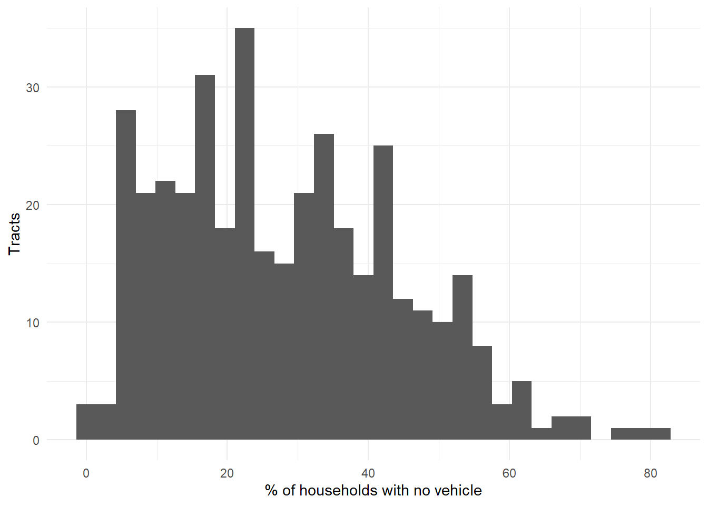
Answer (2–3 sentences): What is your outcome, why would an agency want to predict it, and how reliable is it?
Your answer: My outcome is the share of households in each tract with no vehicle available. SEPTA, the Office of Transportation, Infrastructure, and Sustainability (OTIS), and emergency planners need to know where residents depend on transit, walking, and cycling, both to plan service and to reach car-free households during evacuations or heat events. The median CV is about 23%, and 66 of 408 tracts (16%) fall in the “Low” reliability band (CV above 40%, or no usable CV: 20 tracts have no estimate and one has a 0% estimate). That is under a third, so the outcome is reliable enough to model, though the least reliable tracts are mostly those where few households lack a car, because a small percentage is estimated from a small count.
tracts <- philly_tracts %>%
filter(total_popE > 0,
!is.na(y),
!is.na(med_income),
!is.na(pct_renter),
!is.na(avg_hh_size),
!is.na(median_age)
)
nrow(philly_tracts)[1] 408nrow(tracts)[1] 381Answer: How many tracts did you lose, and what kinds of places are they?
Your answer: I dropped 27 of 408 tracts, leaving 381. Seventeen have zero population (the 98xx special tracts such as the airport, the Navy Yard and large parks) and a few more have almost no households. These are not residential neighborhoods, so a model of household car ownership has nothing to predict there. Six others are real neighborhoods with roughly 900 to 2,600 households each (tracts 165, 285, 148, 277, 301 and 205) that were dropped because the Census reports no median household income for them. They are likely student-heavy tracts, and their no-vehicle shares (30–55%) are high, so dropping them may slightly understate car-free areas.
ggplot(tracts, aes(x = med_income, y = y)) + geom_point(alpha = 0.5) +
geom_smooth(method = "lm", se = FALSE) +
labs(x = "Median household income ($)", y = "% no vehicle") + theme_minimal()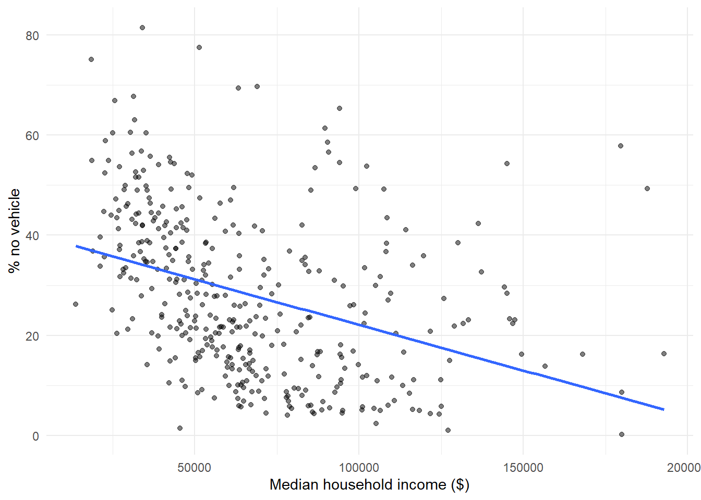
ggplot(tracts, aes(x = pct_renter, y = y)) + geom_point(alpha = 0.5) +
geom_smooth(method = "lm", se = FALSE) +
labs(x = "% renter-occupied", y = "% no vehicle") + theme_minimal()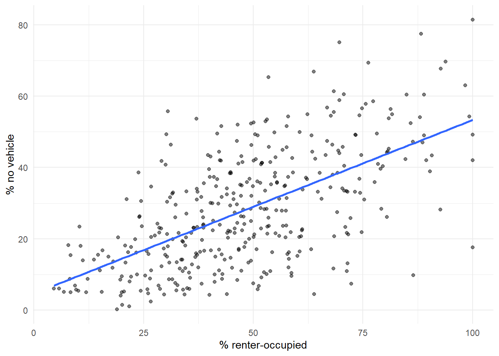
ggplot(tracts, aes(x = avg_hh_size, y = y)) + geom_point(alpha = 0.5) +
geom_smooth(method = "lm", se = FALSE) +
labs(x = "Average household size", y = "% no vehicle") + theme_minimal()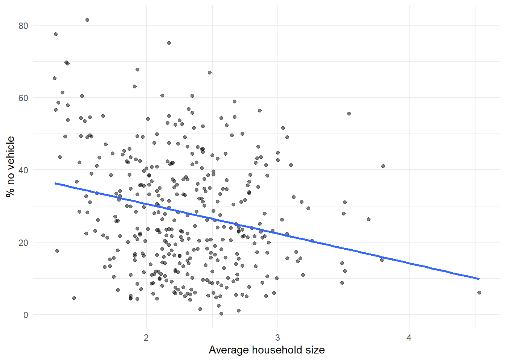
ggplot(tracts, aes(x = median_age, y = y)) + geom_point(alpha = 0.5) +
geom_smooth(method = "lm", se = FALSE) +
labs(x = "Median age", y = "% no vehicle") + theme_minimal()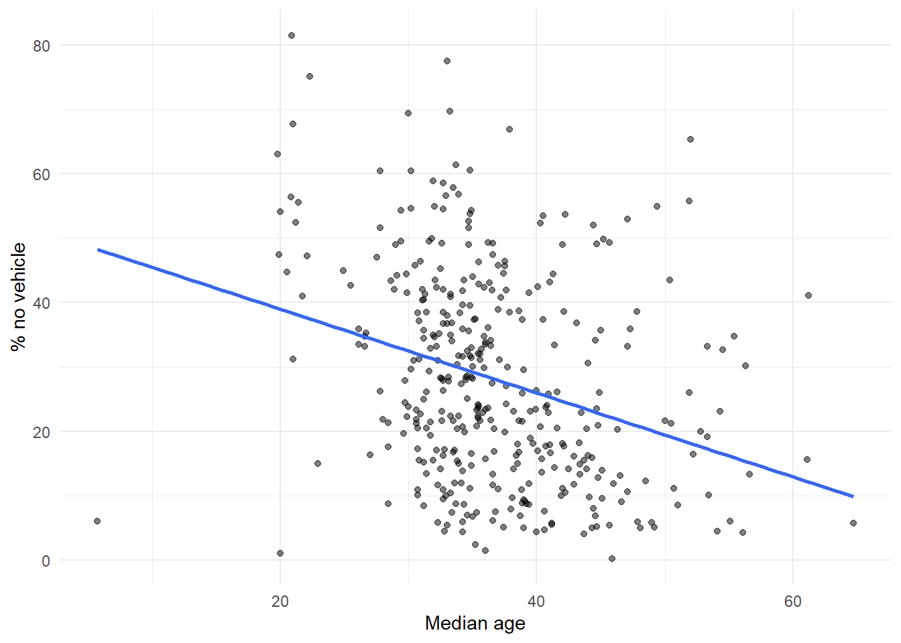
f1 <- y ~ med_income + pct_renter + avg_hh_size + median_age
m1 <- lm(f1, data = tracts)
summary(m1)
Call:
lm(formula = f1, data = tracts)
Residuals:
Min 1Q Median 3Q Max
-36.954 -8.310 -1.247 7.404 42.962
Coefficients:
Estimate Std. Error t value Pr(>|t|)
(Intercept) 5.581e+01 9.562e+00 5.837 1.15e-08 ***
med_income -1.601e-04 2.251e-05 -7.111 5.85e-12 ***
pct_renter 2.945e-01 4.547e-02 6.476 2.94e-10 ***
avg_hh_size -7.720e+00 1.868e+00 -4.134 4.40e-05 ***
median_age -3.666e-01 1.041e-01 -3.523 0.000479 ***
---
Signif. codes: 0 '***' 0.001 '**' 0.01 '*' 0.05 '.' 0.1 ' ' 1
Residual standard error: 12.14 on 376 degrees of freedom
Multiple R-squared: 0.451, Adjusted R-squared: 0.4452
F-statistic: 77.22 on 4 and 376 DF, p-value: < 2.2e-16model_log <- model_log %>%
add_row(model = "m1", added = "ACS baseline",
cv_rmse = cv_rmse(f1, tracts),
notes = "Income, % renter, household size, median age")
model_log# A tibble: 1 × 4
model added cv_rmse notes
<chr> <chr> <dbl> <chr>
1 m1 ACS baseline 12.2 Income, % renter, household size, median ageOn tracts it hasn’t seen, the baseline model misses by about 12.2 percentage points of households with no vehicle.
tracts <- tracts %>% mutate(resid_m1 = residuals(m1))
ggplot(tracts) +
geom_sf(aes(fill = resid_m1), color = NA) +
scale_fill_gradient2(low = "#2166ac", mid = "grey95", high = "#b2182b", midpoint = 0) +
theme_void() +
labs(title = "Baseline model: where it's wrong",
subtitle = "Red = actual higher than predicted",
fill = "Residual")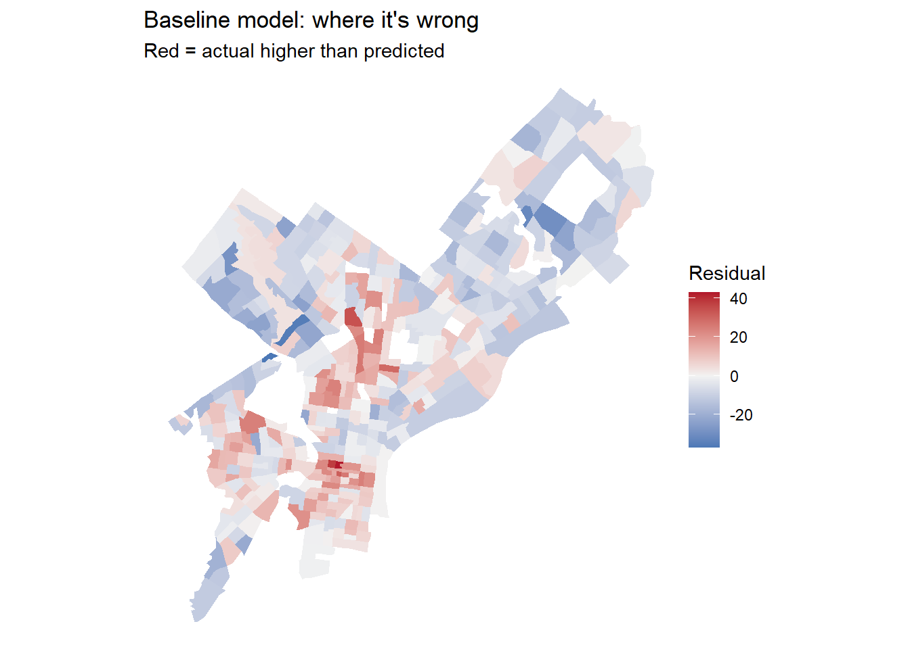
Answer: Where do the residuals cluster? What might those places have in common that your model doesn’t know about?
Your answer: Car-free households are underpredicted (red) in a broad band of North Philadelphia, in West and South Philadelphia, and in a few Center City tracts (4.03, 4.04, 8.06 and 9.01 are among the worst misses, at +26 to +43 points). Car-free households are overpredicted (blue) in the Northwest and Northeast, and in the far Northeast and Southwest edges of the city. Income and tenure don’t capture urban form: how dense and walkable a place is, how close it is to the core, whether bike share and transit are within reach, and how hard it is to park and keep a car on the street. So in Part 3 I chose layers that act as proxies for street-level vehicle presence and for car-free access.
carto_get <- function(sql) {
url <- paste0("https://phl.carto.com/api/v2/sql?format=GeoJSON&q=", URLencode(sql))
st_read(url, quiet = TRUE)
}# Vehicle-related crime categories in 2023
url <- paste0("https://phl.carto.com/api/v2/sql?format=csv&q=",
URLencode("SELECT text_general_code, COUNT(*) AS n
FROM incidents_part1_part2
WHERE dispatch_date >= '2023-01-01' AND dispatch_date < '2024-01-01'
GROUP BY text_general_code ORDER BY n DESC"))
read_csv(url)# A tibble: 32 × 2
text_general_code n
<chr> <dbl>
1 Thefts 37054
2 Other Assaults 25986
3 Motor Vehicle Theft 22478
4 Vandalism/Criminal Mischief 17346
5 All Other Offenses 13334
6 Theft from Vehicle 13002
7 Fraud 7661
8 Aggravated Assault No Firearm 5134
9 Burglary Residential 3800
10 Aggravated Assault Firearm 3320
# ℹ 22 more rows# 311 service names in 2023 (look for the abandoned-vehicle category)
url311 <- paste0("https://phl.carto.com/api/v2/sql?format=csv&q=",
URLencode("SELECT service_name, COUNT(*) AS n
FROM public_cases_fc
WHERE requested_datetime >= '2023-01-01'
AND requested_datetime < '2024-01-01'
GROUP BY service_name ORDER BY n DESC"))
read_csv(url311)# A tibble: 50 × 2
service_name n
<chr> <dbl>
1 Information Request 296790
2 Maintenance Complaint 32092
3 Abandoned Vehicle 31131
4 Rubbish/Recyclable Material Collection 27548
5 Illegal Dumping 22600
6 Graffiti Removal 15101
7 Street Defect 13672
8 Street Light Outage 12861
9 Sanitation Violation 7171
10 Construction Complaints 7029
# ℹ 40 more rows# Layer 1: thefts from vehicles in 2023, a proxy for how many cars are parked on the street
veh_theft <- carto_get(
"SELECT the_geom, text_general_code, dispatch_date
FROM incidents_part1_part2
WHERE dispatch_date >= '2023-01-01' AND dispatch_date < '2024-01-01'
AND text_general_code = 'Theft from Vehicle'"
) %>%
st_transform(st_crs(tracts))
n0 <- nrow(veh_theft)
veh_theft <- veh_theft %>% filter(!st_is_empty(.))
n0 - nrow(veh_theft) # records lost to missing geometry[1] 943# Layer 2: abandoned-vehicle 311 requests in 2023
# (if this returns 0 rows, use the exact service_name from the 311 query above)
abandoned <- carto_get(
"SELECT the_geom, service_name, requested_datetime
FROM public_cases_fc
WHERE requested_datetime >= '2023-01-01' AND requested_datetime < '2024-01-01'
AND service_name = 'Abandoned Vehicle'"
) %>%
st_transform(st_crs(tracts))
n0 <- nrow(abandoned)
abandoned <- abandoned %>% filter(!st_is_empty(.))
n0 - nrow(abandoned) # records lost to missing geometry[1] 56# Layer 3: Indego bike-share stations (car-free mobility supply)
stations <- st_read("https://www.rideindego.com/stations/json/", quiet = TRUE) %>%
st_transform(st_crs(tracts))The Indego feed is current, not 2023, which bends Rule 2 slightly. Most stations predate 2023, but newer expansion stations would add a small amount of “future” information. I note this as a limitation.
Answer: Why these layers? What do you expect them to capture that the ACS variables don’t?
Your answer: Thefts from vehicles and abandoned-vehicle reports both depend on how many cars are parked on a block. They should be dense where car ownership is high and parking is on the street, and sparse in car-free cores. Neither is built from the ACS vehicle count, so neither is leakage, but each says something about the local car environment that income and tenure miss. Indego stations and distance to City Hall measure car-free accessibility: how easy it is to live without a car. That is exactly the urban-form gap the baseline residual map points to.
tract_pts <- st_point_on_surface(tracts) # always inside the tract, unlike a centroid
tracts <- tracts %>%
mutate(
area_sqmi = as.numeric(st_area(.)) / 27878400,
n_veh_theft = lengths(st_intersects(., veh_theft)),
n_abandoned = lengths(st_intersects(., abandoned)),
veh_theft_per_sqmi = n_veh_theft / area_sqmi,
abandoned_per_sqmi = n_abandoned / area_sqmi,
abandoned_per_1k_hh = n_abandoned / hh_totalE * 1000
)
summary(tracts$veh_theft_per_sqmi) Min. 1st Qu. Median Mean 3rd Qu. Max.
0.00 63.35 108.14 135.03 171.25 629.29 summary(tracts$abandoned_per_sqmi) Min. 1st Qu. Median Mean 3rd Qu. Max.
0.0 134.2 316.3 364.6 536.9 1154.6 # Small-denominator check: tracts with the highest per-household rates
tracts %>% st_drop_geometry() %>%
arrange(desc(abandoned_per_1k_hh)) %>%
select(NAME, hh_totalE, n_abandoned, abandoned_per_1k_hh) %>%
head(5) NAME hh_totalE n_abandoned
1 Census Tract 381; Philadelphia County; Pennsylvania 317 131
2 Census Tract 380; Philadelphia County; Pennsylvania 793 137
3 Census Tract 294; Philadelphia County; Pennsylvania 1192 177
4 Census Tract 378; Philadelphia County; Pennsylvania 1157 166
5 Census Tract 64; Philadelphia County; Pennsylvania 1584 215
abandoned_per_1k_hh
1 413.2492
2 172.7617
3 148.4899
4 143.4745
5 135.7323I use per square mile densities in the models, because the per-household rates blow up in tracts with very few households, as the check above shows.
nearest_idx <- st_nearest_feature(tract_pts, stations)
city_hall <- st_sfc(st_point(c(-75.1636, 39.9526)), crs = 4326) %>%
st_transform(st_crs(tracts))
tracts <- tracts %>%
mutate(
dist_station_mi = as.numeric(
st_distance(tract_pts, stations[nearest_idx, ], by_element = TRUE)) / 5280,
dist_ch_mi = as.numeric(st_distance(tract_pts, city_hall)) / 5280
)# m2: + density of thefts from vehicles
f2 <- y ~ med_income + pct_renter + avg_hh_size + median_age + veh_theft_per_sqmi
model_log <- model_log %>%
add_row(model = "m2", added = "+ theft-from-vehicle density",
cv_rmse = cv_rmse(f2, tracts),
notes = "Density: 2023 thefts from vehicles per sq mi")
# m3: + density of abandoned-vehicle reports
f3 <- update(f2, . ~ . + abandoned_per_sqmi)
model_log <- model_log %>%
add_row(model = "m3", added = "+ abandoned-vehicle density",
cv_rmse = cv_rmse(f3, tracts),
notes = "Density: 2023 311 abandoned-vehicle requests per sq mi")
# m4: + distance to nearest Indego station
f4 <- update(f3, . ~ . + dist_station_mi)
model_log <- model_log %>%
add_row(model = "m4", added = "+ distance to nearest Indego station",
cv_rmse = cv_rmse(f4, tracts),
notes = "Nearest-feature distance (miles)")
# m5: + distance to City Hall
f5 <- update(f4, . ~ . + dist_ch_mi)
model_log <- model_log %>%
add_row(model = "m5", added = "+ distance to City Hall",
cv_rmse = cv_rmse(f5, tracts),
notes = "Distance to a single place (miles)")
model_log# A tibble: 5 × 4
model added cv_rmse notes
<chr> <chr> <dbl> <chr>
1 m1 ACS baseline 12.2 Income, % renter, househol…
2 m2 + theft-from-vehicle density 12.2 Density: 2023 thefts from …
3 m3 + abandoned-vehicle density 12.1 Density: 2023 311 abandone…
4 m4 + distance to nearest Indego station 11.2 Nearest-feature distance (…
5 m5 + distance to City Hall 9.75 Distance to a single place…Answer: Which spatial feature helped most? Did any feature you expected to help do nothing, or make CV RMSE worse? Why might that be?
Your answer: The biggest drop in CV RMSE came from distance to City Hall, from 11.21 to 9.75 points. Distance to the nearest Indego station was second (12.12 to 11.21). That fits the residual map: being car-free is mainly about being in the dense, transit-rich core, and distance captures that directly. The two density features did very little: thefts from vehicles moved CV RMSE from 12.19 to 12.16 and abandoned-vehicle reports from 12.16 to 12.12. Neither made it worse. A likely reason is that they overlap with information already in the model. Abandoned-vehicle reports, for example, cluster in lower-income areas that income already describes, and both theft and 311 counts also reflect reporting behavior, not just how many cars there are.
ggplot(tracts, aes(x = med_income)) + geom_histogram(bins = 30) + theme_minimal()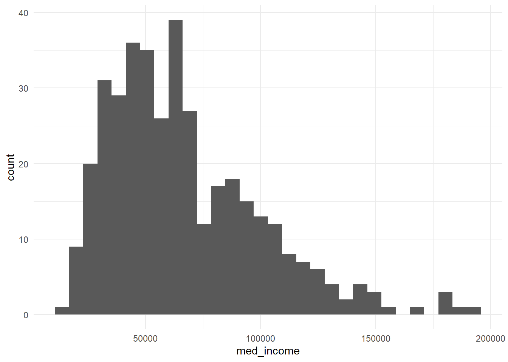
ggplot(tracts, aes(x = log(med_income))) + geom_histogram(bins = 30) + theme_minimal()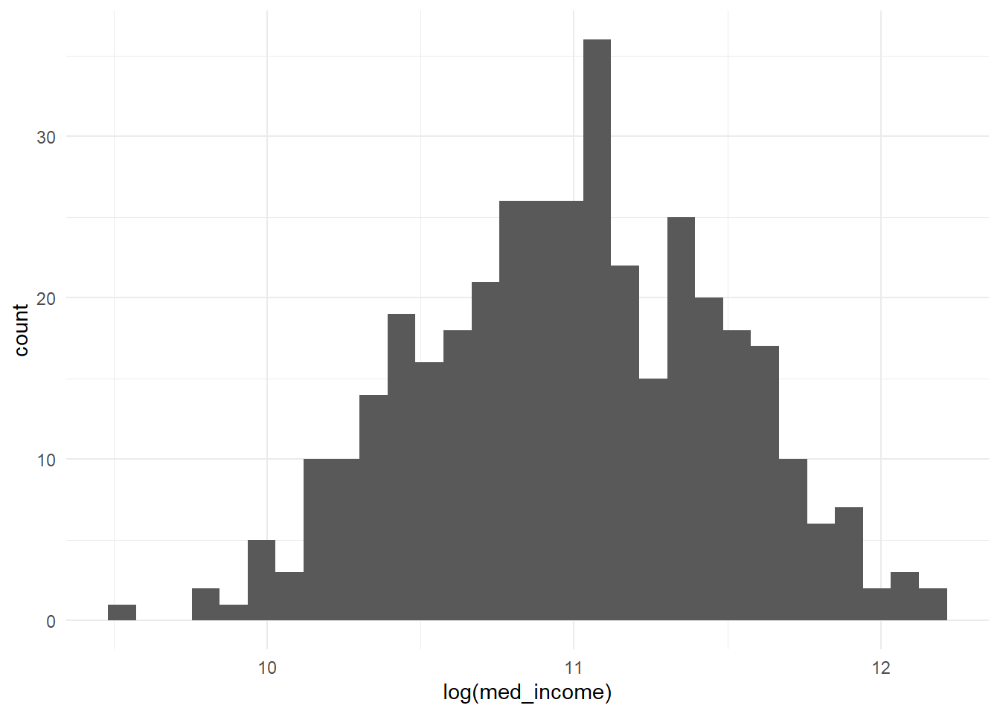
ggplot(tracts, aes(x = veh_theft_per_sqmi)) + geom_histogram(bins = 30) + theme_minimal()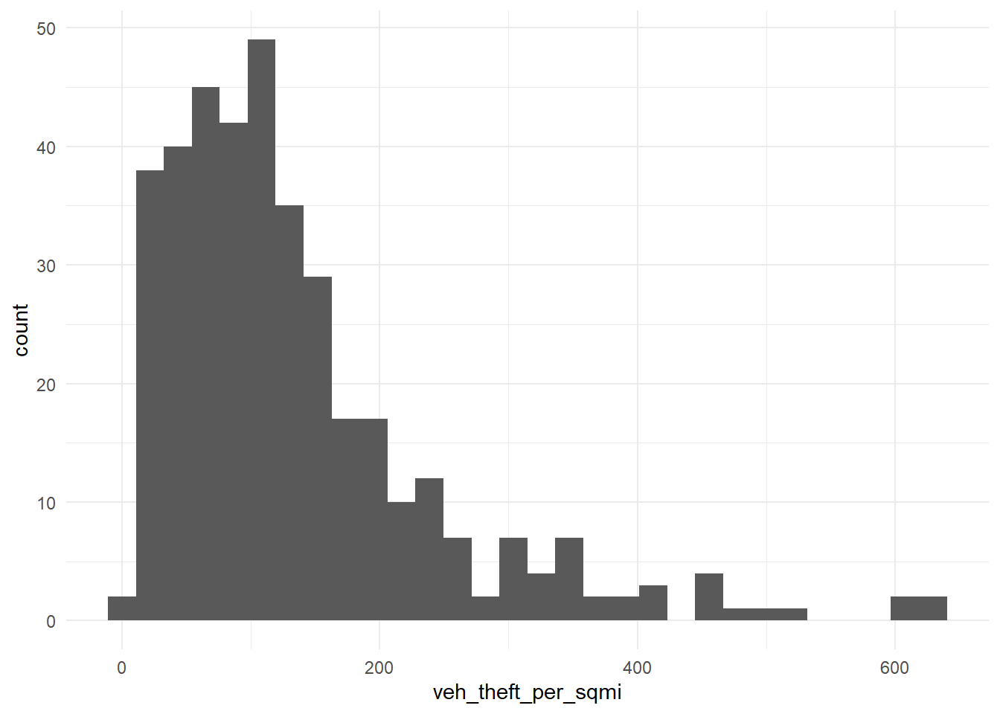
ggplot(tracts, aes(x = log1p(veh_theft_per_sqmi))) + geom_histogram(bins = 30) + theme_minimal()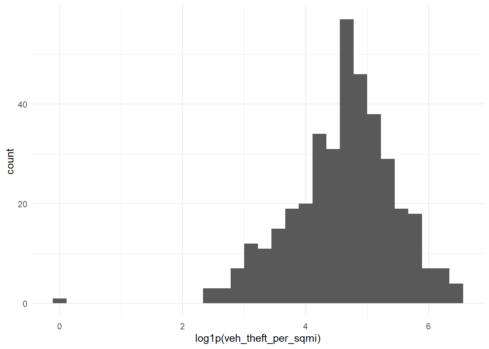
Income is right-skewed and always positive, so I use log(). The crime and 311 densities are right-skewed and can be zero, so I use log1p().
# Does % no-vehicle fall off with distance from City Hall in a curve?
ggplot(tracts, aes(x = dist_ch_mi, y = y)) +
geom_point(alpha = 0.4) +
geom_smooth(method = "lm", formula = y ~ x + I(x^2), se = FALSE, color = "red") +
theme_minimal()
# Categorical bike-share access, with group sizes checked (aim for 20 or more each)
tracts <- tracts %>%
mutate(
indego_access = case_when(
dist_station_mi < 0.25 ~ "Walkable (<1/4 mi)",
dist_station_mi < 1 ~ "Near (1/4–1 mi)",
TRUE ~ "Far (1+ mi)"
),
indego_access = factor(indego_access,
levels = c("Far (1+ mi)", "Near (1/4–1 mi)", "Walkable (<1/4 mi)"))
)
tracts %>% st_drop_geometry() %>% count(indego_access) indego_access n
1 Far (1+ mi) 144
2 Near (1/4–1 mi) 72
3 Walkable (<1/4 mi) 165# m6: log income, log1p crime and 311 densities (replacing the linear versions)
f_log <- y ~ log(med_income) + pct_renter + avg_hh_size + median_age +
log1p(veh_theft_per_sqmi) + log1p(abandoned_per_sqmi) +
dist_station_mi + dist_ch_mi
model_log <- model_log %>%
add_row(model = "m6", added = "log of income, log1p of densities",
cv_rmse = cv_rmse(f_log, tracts),
notes = "Compresses skewed income and count densities")
# m7: squared distance to City Hall
f_sq <- update(f_log, . ~ . + I(dist_ch_mi^2))
model_log <- model_log %>%
add_row(model = "m7", added = "+ squared distance to City Hall",
cv_rmse = cv_rmse(f_sq, tracts),
notes = "Lets the core-to-edge gradient flatten")
# m8: categorical Indego access, replacing continuous station distance
f_cat <- y ~ log(med_income) + pct_renter + avg_hh_size + median_age +
log1p(veh_theft_per_sqmi) + log1p(abandoned_per_sqmi) +
dist_ch_mi + I(dist_ch_mi^2) + indego_access
m_cat <- lm(f_cat, data = tracts)
summary(m_cat)
Call:
lm(formula = f_cat, data = tracts)
Residuals:
Min 1Q Median 3Q Max
-24.0755 -6.3245 -0.0895 5.1450 26.1161
Coefficients:
Estimate Std. Error t value Pr(>|t|)
(Intercept) 247.96942 19.64876 12.620 < 2e-16 ***
log(med_income) -17.17843 1.31998 -13.014 < 2e-16 ***
pct_renter 0.15525 0.03727 4.166 3.87e-05 ***
avg_hh_size -0.33659 1.56710 -0.215 0.8301
median_age 0.04138 0.08555 0.484 0.6289
log1p(veh_theft_per_sqmi) -1.38517 0.71375 -1.941 0.0531 .
log1p(abandoned_per_sqmi) -1.25470 0.56152 -2.234 0.0260 *
dist_ch_mi -6.66196 0.74479 -8.945 < 2e-16 ***
I(dist_ch_mi^2) 0.27243 0.04578 5.951 6.19e-09 ***
indego_accessNear (1/4–1 mi) -3.63152 1.75253 -2.072 0.0389 *
indego_accessWalkable (<1/4 mi) -3.85347 2.19667 -1.754 0.0802 .
---
Signif. codes: 0 '***' 0.001 '**' 0.01 '*' 0.05 '.' 0.1 ' ' 1
Residual standard error: 9.122 on 370 degrees of freedom
Multiple R-squared: 0.6948, Adjusted R-squared: 0.6866
F-statistic: 84.24 on 10 and 370 DF, p-value: < 2.2e-16model_log <- model_log %>%
add_row(model = "m8", added = "Indego access category (replaces station distance)",
cv_rmse = cv_rmse(f_cat, tracts),
notes = "Reference level: Far (1+ mi)")
model_log# A tibble: 8 × 4
model added cv_rmse notes
<chr> <chr> <dbl> <chr>
1 m1 ACS baseline 12.2 Income, % re…
2 m2 + theft-from-vehicle density 12.2 Density: 202…
3 m3 + abandoned-vehicle density 12.1 Density: 202…
4 m4 + distance to nearest Indego station 11.2 Nearest-feat…
5 m5 + distance to City Hall 9.75 Distance to …
6 m6 log of income, log1p of densities 9.34 Compresses s…
7 m7 + squared distance to City Hall 9.20 Lets the cor…
8 m8 Indego access category (replaces station distance) 9.21 Reference le…Answer: Which transformation helped most? For your categorical variable, write one sentence reading one of its coefficients correctly, naming the reference level.
Your answer: The log transformation lowered CV RMSE the most (9.75 to 9.34); squaring distance to City Hall added a smaller gain (9.34 to 9.20), and the Indego category made almost no difference (9.205 to 9.201). Compared with tracts more than a mile from an Indego station (the reference level), tracts with a station within a quarter mile are predicted to have 4.1 percentage points fewer car-free households, holding income, tenure, household size, age, crime and 311 densities, and distance to City Hall constant. The sign is opposite to what I first expected, and the estimate is imprecise (p = 0.07), because distance to City Hall already captures most of the core effect.
Keep each feature or transformation only if it lowered CV RMSE in the log. Every row in the log lowered it, so the formula below keeps the full set (continuous station distance is replaced by the Indego category, as in m8).
f_final <- y ~ log(med_income) + pct_renter + avg_hh_size + median_age +
log1p(veh_theft_per_sqmi) + log1p(abandoned_per_sqmi) +
dist_ch_mi + I(dist_ch_mi^2) + indego_access
m_final <- lm(f_final, data = tracts)
summary(m_final)
Call:
lm(formula = f_final, data = tracts)
Residuals:
Min 1Q Median 3Q Max
-24.0755 -6.3245 -0.0895 5.1450 26.1161
Coefficients:
Estimate Std. Error t value Pr(>|t|)
(Intercept) 247.96942 19.64876 12.620 < 2e-16 ***
log(med_income) -17.17843 1.31998 -13.014 < 2e-16 ***
pct_renter 0.15525 0.03727 4.166 3.87e-05 ***
avg_hh_size -0.33659 1.56710 -0.215 0.8301
median_age 0.04138 0.08555 0.484 0.6289
log1p(veh_theft_per_sqmi) -1.38517 0.71375 -1.941 0.0531 .
log1p(abandoned_per_sqmi) -1.25470 0.56152 -2.234 0.0260 *
dist_ch_mi -6.66196 0.74479 -8.945 < 2e-16 ***
I(dist_ch_mi^2) 0.27243 0.04578 5.951 6.19e-09 ***
indego_accessNear (1/4–1 mi) -3.63152 1.75253 -2.072 0.0389 *
indego_accessWalkable (<1/4 mi) -3.85347 2.19667 -1.754 0.0802 .
---
Signif. codes: 0 '***' 0.001 '**' 0.01 '*' 0.05 '.' 0.1 ' ' 1
Residual standard error: 9.122 on 370 degrees of freedom
Multiple R-squared: 0.6948, Adjusted R-squared: 0.6866
F-statistic: 84.24 on 10 and 370 DF, p-value: < 2.2e-16model_log <- model_log %>%
add_row(model = "final", added = "Best-performing features and transformations",
cv_rmse = cv_rmse(f_final, tracts),
notes = "Selected by CV RMSE, not p-values")
model_log# A tibble: 9 × 4
model added cv_rmse notes
<chr> <chr> <dbl> <chr>
1 m1 ACS baseline 12.2 Income, % re…
2 m2 + theft-from-vehicle density 12.2 Density: 202…
3 m3 + abandoned-vehicle density 12.1 Density: 202…
4 m4 + distance to nearest Indego station 11.2 Nearest-feat…
5 m5 + distance to City Hall 9.75 Distance to …
6 m6 log of income, log1p of densities 9.34 Compresses s…
7 m7 + squared distance to City Hall 9.20 Lets the cor…
8 m8 Indego access category (replaces station distance) 9.21 Reference le…
9 final Best-performing features and transformations 9.21 Selected by …tracts <- tracts %>% mutate(resid_final = residuals(m_final))
ggplot(tracts) +
geom_sf(aes(fill = resid_final), color = NA) +
scale_fill_gradient2(low = "#2166ac", mid = "grey95", high = "#b2182b", midpoint = 0) +
theme_void() +
labs(title = "Final model: where it's wrong",
subtitle = "Red = actual higher than predicted",
fill = "Residual")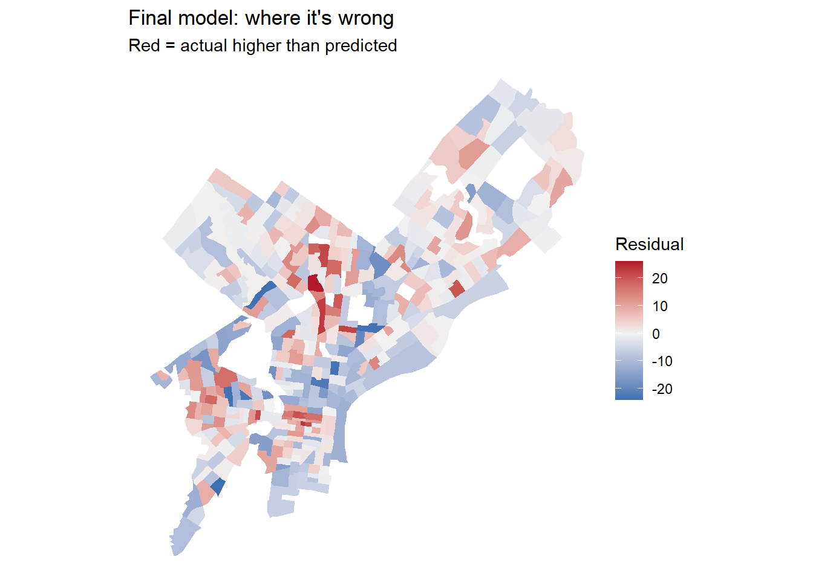
bind_rows(
tracts %>% transmute(model = "Baseline (m1)", resid = resid_m1),
tracts %>% transmute(model = "Final", resid = resid_final)
) %>%
mutate(model = factor(model, levels = c("Baseline (m1)", "Final"))) %>%
ggplot() +
geom_sf(aes(fill = resid), color = NA) +
scale_fill_gradient2(low = "#2166ac", mid = "grey95", high = "#b2182b", midpoint = 0) +
facet_wrap(~ model) +
theme_void() +
labs(title = "Residuals before and after feature engineering",
subtitle = "Red = actual higher than predicted", fill = "Residual")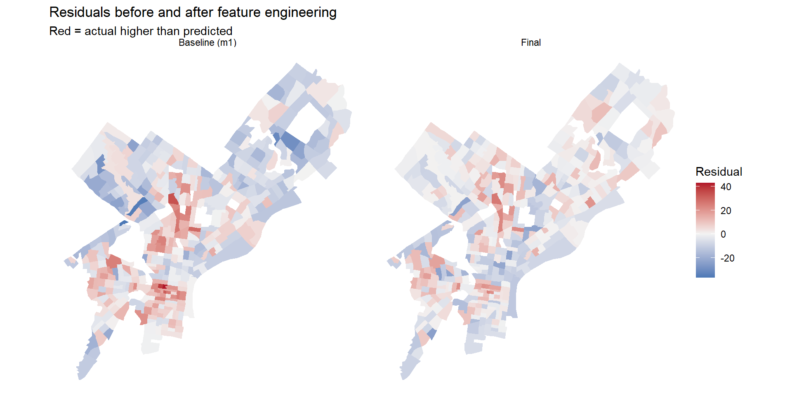
Did the clusters shrink? Partly. The blue overprediction in the Northwest and Northeast is much weaker, and the reds in West and South Philadelphia are lighter, because distance to City Hall and Indego access now explain much of the car-free core. Errors remain in North Philadelphia, where tracts such as 200, 203, 195.01, 280 and 278 still have 22 to 26 more points of car-free households than predicted, and in a few Center City tracts (8.06, 9.01). Likely causes are public housing and other low-income areas where car-free households are common for reasons the model does not capture.
ggplot(tracts, aes(x = y_cv, y = abs(resid_final))) +
geom_point(alpha = 0.5) +
geom_smooth(se = FALSE) +
labs(x = "CV of your outcome estimate (%)", y = "Size of the miss") +
theme_minimal()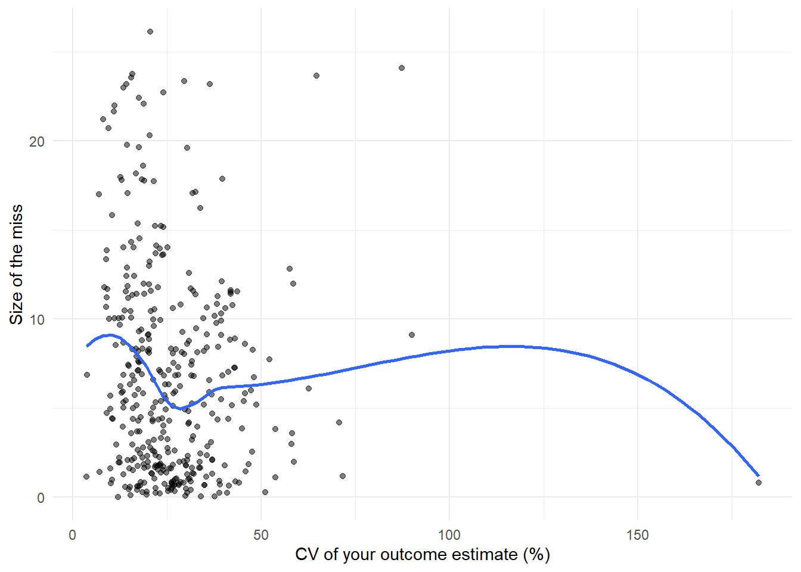
Your answer:
What helped, and what didn’t? The largest improvement came from distance to City Hall, which cut CV RMSE from 11.21 to 9.75 percentage points. This makes sense: whether a household can live without a car depends heavily on where it sits relative to the dense, transit-rich core, which income and tenure capture only indirectly. My biggest disappointment was the density of thefts from vehicles, which lowered CV RMSE by only about 0.03 (12.19 to 12.16). I expected it to capture how many cars are parked on the street, but reported thefts and 311 requests also reflect reporting behavior and overlap with information already in the model, especially income.
Read one coefficient twice. For the renter share in my final model, β̂ = 0.155: holding the other predictors constant, each additional percentage point of renter-occupied housing goes with 0.155 more percentage points of car-free households. As ŷ, comparing two otherwise identical tracts, one 20 points more renter-occupied than the other, the model predicts the more rental tract to have about 3.1 percentage points more households without a car.
What’s still missing? My final residual map still shows underprediction in North Philadelphia. I would like next to measure transit service quality, not just access to bike share: for example, weekday bus and rail frequency within a quarter mile, built from SEPTA’s GTFS feeds. I would also measure off-street parking supply, which could be estimated from the Office of Property Assessment’s property data on garages.
How much is noise? The final plot shows that the largest misses do not rise with the CV of the estimate (correlation about -0.10; mean absolute miss is 8.5 points in the most reliable quarter of tracts and 6.5 in the least reliable). The largest misses are not concentrated in unreliable tracts, so most of the remaining error reflects real neighborhood differences that my features don’t yet capture. If anything, the misses are larger where estimates are most reliable, because those are the high-share, car-free tracts where the outcome varies most and where the model still underpredicts.
Render this document to HTML and submit the link on Canvas by Friday, October 16.